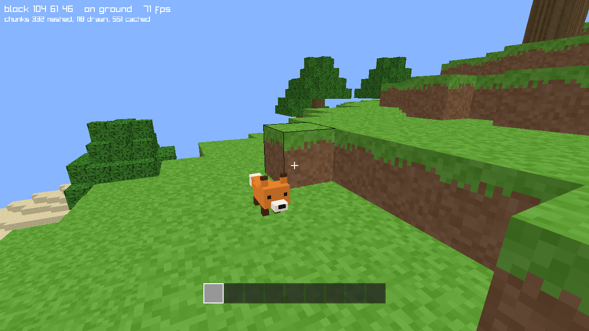

José
- GaloisFormal Methods
- University of MarylandFaculty
- Non-profit experience as Exec. Dir. of the Haskell Foundation
- Formal Methods consultant helping Co.s leverage these tools
José Manuel Calderón Trilla Harrison Goldstein
Lean lines per project; dashed lines: well-known open-source codebases, for scale
2.4M lines in 9 years
13.5M lines in 11 days
Monthly search interest, Nov 2024 – Sep 2026
“software verification”
“Lean programming language”
Agents change your properties in order to meet the code
Agents prove that your code meets the specification defined by your code, which is vacuously true
The property or theorem as stated is subtly (but importantly) different from what you asked for: an interpretability problem for specifications
Little to no thought given to the link between the model and the actual implementation
Bad PBT generators
Works, sure, but Lean was happy to use a C-library without thinking about how that library should behave!

Formal Methods, honestly.
Help engineers understand the toolbox:
Can all be
done in Lean
Soon it will
all be done in
formal languages
for common formal-methods tasks
formal-methods tools that are important, but not interesting to PhDs, e.g.:
Formal Methods, honestly.
José Manuel Calderón Trilla Harrison Goldstein